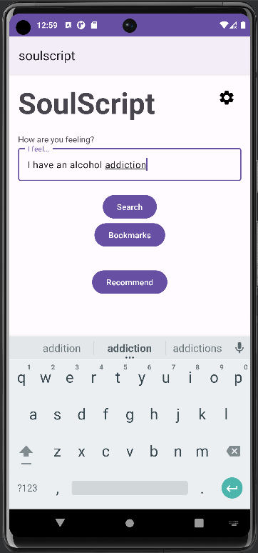
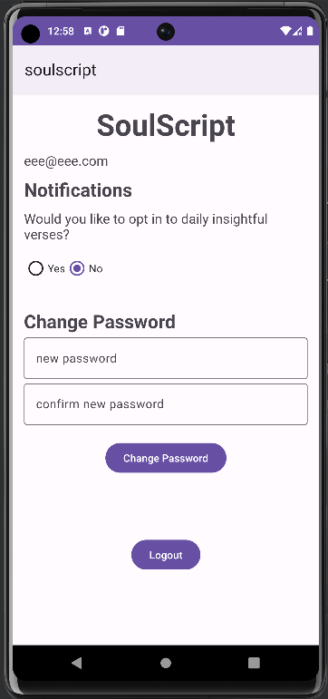
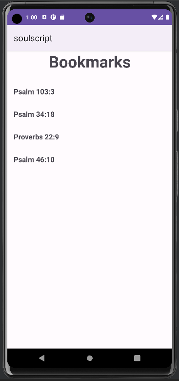
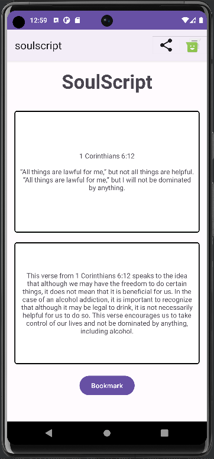

App Overview
The app takes in user problem description and makes API call to open ai chatgpt API using okhttp3 to get a bible verse with a relevant explanation.
Login Page

- User can log in with a registered email and password
- Test account details are username: eee@eee.com
- Test account password: eeeeee
- User can also click "forgot password" textview to open the forgot password page
- If they do not have an account they can click "Create Account" Textview to go to registration page and make an account
Forgot Password Page

- User is asked to enter an email, the email is checked to make sure that it is a valid input
- User is sent a password reset email sent to them using the firebase sendPasswordResetEmail() method
Registration Page

- User is asked to enter an email and matching passwords
- The account won't be created unless a valid email and password is entered otherwise a toast will be sent asking for the correct inputs
- Account is created using Firebase is used for authentication
- If you already have an account you can click the "Already have an account" textview and return to the login page
Home Page
- Once logged in, the app opens on the home page
- You can click the cog imagebutton to open the settings
- You can enter a problem description and press search, which will open the results page with a bible verse and an explanation relevant to the problem at hand
- Unfortunately during peak loads, the API can be unresponsive and timeout, you may have to try again at a later time.
- Additionally you can't search for verses without an internet connection
- You can also get a recommendation based on your bookmarked verses, it will try to recommend a verse with similar themes
- You can also click the bookmarks button and open the bookmarks page
Settings Page
- On the settings page the user can opt in to daily notifications, and their preference will be saved.
- They can also change their password and sign out on this page
Bookmarks Page
- This page shows a list of a user's bookmarked verses, when you click on one it opens the results page with the verse and explanation.
- If you open the app without an internet connection the bookmarks will be populated by the local database.
Results Page
- This page is opened when the user searches for a verse for their problem or searches for a recommended verse or clicks a bookmarked verse in the bookmarks page
- It displays the verse in the top textview and the explanation in the bottom textview
- You can click the share image button and it lets you send a text to share the verse and explanation to someone who needs it